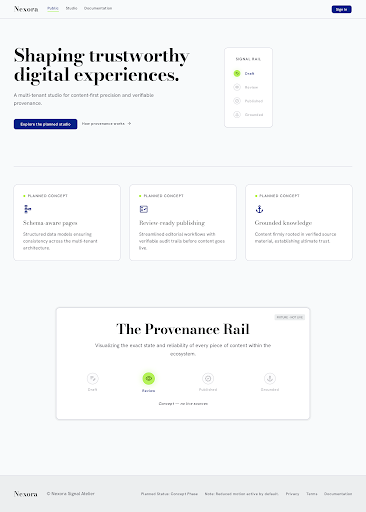

Nexora Signal Atelier — planned concept capture
This is a non-executable, offline evidence wrapper. It is not product code and not a substitute for a Stitch HTML export.

This is a non-executable, offline evidence wrapper. It is not product code and not a substitute for a Stitch HTML export.
